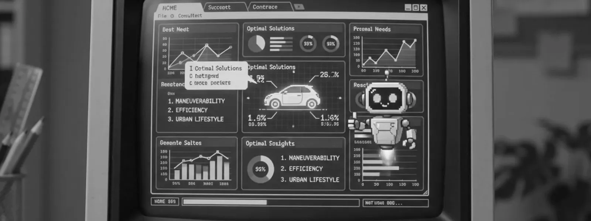

IA et études qualitatives :
ce qu'elle fait bien,
ce qu'elle rate encore.
« Huit fois plus vite, quatre-vingts pour cent moins cher. » La promesse circule, et elle n'est pas entièrement fausse. Elle est vraie sur certains maillons de la chaîne, et franchement dangereuse sur d'autres. Voici lesquels.

Où l'IA fait vraiment gagner du temps
Sur tout ce qui est mécanique et vérifiable. Trois postes ont basculé pour de bon :
- La transcription. Elle coûtait 20 € de l'heure d'enregistrement, elle en coûte quelques dizaines de centimes. Ce n'est plus un poste de facturation, et prétendre le contraire ne tiendra pas trois questions chez un acheteur informé.
- La structuration du corpus. Découper, horodater, attribuer les tours de parole, aligner les guides sur les réponses : quelques minutes au lieu d'une journée.
- Le premier balayage thématique. Sortir les récurrences d'un corpus de trente entretiens, repérer ce qui revient et où, proposer des regroupements. C'est un point de départ d'analyse, pas une analyse.
Le gain est réel et nous le prenons : il libère le temps du consultant pour la partie qui ne s'automatise pas. Nous ne le facturons pas comme s'il coûtait encore ce qu'il coûtait.
Où elle échoue encore
Partout où il faut arbitrer entre deux lectures également plausibles. C'est la définition même de l'analyse qualitative, et c'est exactement ce que les modèles font mal : ils produisent une synthèse cohérente, fluide, et qui lisse précisément la contradiction sur laquelle reposait l'intérêt du corpus.
Trois échecs récurrents, observés sur nos propres corpus :
- Le nivellement du signal faible. Ce qui n'est dit que par deux personnes sur trente disparaît de la synthèse. Or c'est souvent là qu'est l'information neuve : la majorité confirme ce que vous saviez.
- La confusion entre ce qui est dit et ce qui est fait. Un participant qui explique son choix d'achat produit une reconstruction rationnelle. Un analyste entend l'écart entre le récit et le comportement décrit trente secondes plus tard. Le modèle prend les deux pour des faits.
- L'hallucination de citation. Une synthèse générative produit des verbatims plausibles qui ne figurent pas dans le corpus. C'est la raison pour laquelle nous ne livrons aucune conclusion qui ne soit remontable jusqu'à sa source horodatée.
Et l'entretien modéré par une IA ?
Il fonctionne sur des sujets simples, à faible enjeu, avec des participants coopératifs — et il s'effondre partout ailleurs. Sur un test de concept grand public sans matériel, un entretien automatisé produit une matière lisible. Sur un sujet sensible, sur un dirigeant, sur du B2B technique, il ne relance pas au bon endroit parce qu'il ne perçoit ni la gêne, ni l'orgueil professionnel, ni le moment où la personne cherche ses mots.
Le vrai problème n'est pas la qualité de la question suivante : c'est que personne n'était dans la pièce. Ce que l'on perd n'est pas dans la transcription — c'est justement ce qui n'y est pas.
Les répondants synthétiques sont-ils utilisables ?
Non, pas comme substitut de terrain. La profession française a tranché avant nous : Syntec Conseil a publié en mai 2025 sept engagements d'usage responsable de l'IA dans les études — supervision humaine à chaque étape, transparence totale sur les outils employés. Et la direction générale d'OpinionWay a publiquement qualifié les entretiens synthétiques de « mirage dangereux » en novembre 2025.
Le débat n'est pas franco-français, et il n'est pas clos : Agalma Études accorde aux répondants synthétiques une utilité de pré-test tout en constatant qu'ils échouent à restituer l'émotion, l'hésitation et le silence ; Ipsos parle d'opportunités et de limites. Côté adoption, une enquête Qualtrics citée par la presse professionnelle en 2026 relève que 15 % des chargés d'études déclarent déjà utiliser des agents IA, et que 78 % estiment qu'ils traiteront plus de la moitié des projets d'ici trois ans. C'est une prévision de praticiens, pas une mesure : à lire comme un climat, pas comme un fait.
La raison est simple : un modèle génère la réponse la plus probable. Une étude qualitative sert à trouver l'improbable — la personne qui n'utilise pas votre produit comme prévu, celle qui a un usage que personne n'avait imaginé. Interroger un modèle revient à interroger la moyenne de ce qui a déjà été écrit, c'est-à-dire exactement ce que vous savez déjà.
Les répondants synthétiques ont un usage honnête et étroit : pré-tester un guide d'entretien, repérer une question mal formulée avant d'engager du terrain réel. Nous les utilisons pour ça, et pour rien d'autre.
Notre règle : ce que l'IA fait, ce qu'elle ne fait jamais
| Étape | Ce que l'IA fait chez nous | Ce qu'elle ne fait jamais |
|---|---|---|
| Cadrage | Rien | Traduire un enjeu business en dispositif |
| Recrutement | Aide au filtrage des candidatures | Valider un profil sans contrôle humain |
| Terrain | Rien | Animer un groupe ou conduire un entretien |
| Transcription | Tout, avec relecture humaine | Être livrée sans vérification |
| Analyse | Premier balayage, regroupements proposés | Trancher entre deux interprétations |
| Restitution | Mise en forme, variantes de formulation | Écrire la recommandation |
Cette table n'est pas une précaution rhétorique : c'est la transparence que demandent les engagements Syntec, et c'est ce que nous remettons par écrit en avant-vente.
Où sont vos données ?
Chez un fournisseur de transcription français, sans entraînement des modèles sur vos corpus et sans rétention au-delà du traitement. C'est un point que peu d'acteurs écrivent noir sur blanc, et c'est pourtant la première question d'un service juridique quand le corpus contient des données sensibles.
Le détail du protocole figure dans notre livre blanc : la parole client, structurée jusqu'à la décision.
Questions fréquentes sur l'IA dans les études
L'IA va-t-elle remplacer les instituts d'études ?
Elle remplace des tâches, pas un métier. La transcription, la structuration et le premier balayage thématique ont basculé pour de bon. Le cadrage, la conduite du terrain et l'arbitrage entre interprétations concurrentes ne montrent aucun signe de bascule.
Comment savoir si mon prestataire utilise de l'IA ?
Demandez-le, par écrit. La transparence sur les outils employés est un engagement professionnel en France depuis 2025, pas une faveur. Une réponse vague sur ce point est en soi une réponse.
L'IA fait-elle baisser le prix d'une étude ?
Sur certains postes, oui — la transcription ne coûte plus rien. Mais ces postes ne représentaient pas l'essentiel du budget : le recrutement et le temps de consultant, eux, n'ont pas bougé. Une baisse de 80 % suppose qu'on a retiré autre chose.
Mes verbatims servent-ils à entraîner des modèles ?
Chez nous, non : la transcription passe par un fournisseur français, avec l'entraînement désactivé et sans rétention au-delà du traitement. C'est une question à poser systématiquement, surtout si votre corpus contient des données sensibles.
Que dit la réglementation sur l'IA en études ?
Le cadre professionnel français impose une supervision humaine à chaque étape et la transparence sur les outils. S'y ajoutent le RGPD pour les données personnelles des participants et, progressivement, les obligations européennes sur l'IA.